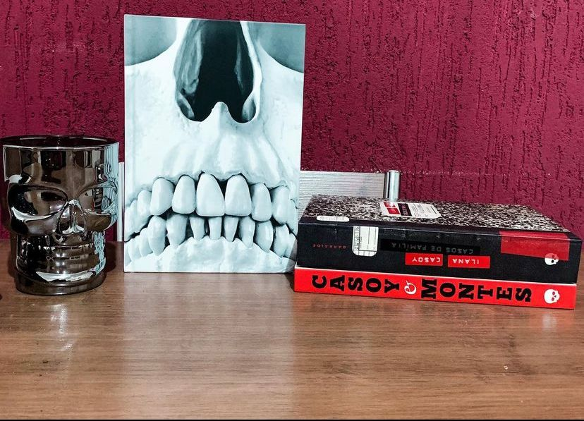

Arquivos Serial Killers
ARQUIVOS SERIAL KILLERS LIMITED EDITION é o primeiro dos relançamentos comemorativos dos 5 anos da Caveirinha. Os dois livros, SERIAL KILLERS: LOUCO OU CRUEL? e SERIAL KILLERS: MADE IN BRAZIL, reunidos num único volume de luxo, com mais de 700 páginas de investigação.
Temos aqui uma edição linda e maravilhosa da Darkside e um livro que na verdade são dois da nossa pioneira no estudo das ciências criminais no Brasil, Ilana Casoy. Podemos dizer que ela é autoridade no que diz respeito a mentes criminosas e resolução de crimes no Brasil, tipo nosso John Douglas do Brasil.
No livro SERIAL KILLERS: LOUCO OU CRUEL? A escritora mergulhou em arquivos da polícia e da Justiça, do FBI e da Scotland Yard, além de ter feito uma pesquisa rigorosa em diversas outras fontes para compor um inquietante roteiro de como, por que razão e com que métodos os serial killers agem.
Em MADE IN BRAZIL, Casoy dedicou-se a investigar os serial killers brasileiros, no que viria a ser o primeiro livro do gênero dedicado aos assassinos em série do Brasil. Foram cinco anos de pesquisas, visitas a arquivos públicos, manicômios e penitenciárias, além de entrevistas cara a cara com personificações do mal em terras tupiniquins, para produzir um dossiê sobre o lado mais sombrio do ser humano.
A única coisa que posso dizer desta edição maravilhosa é, que se você assim como eu AMA true crime e quer saber saber mais sobre a mente dos criminosos o livro é pra você ! E além de tudo você vai saber mais sobre vários serial killers brasileiros e suas histórias criminosas. Apesar de o livro ser bem grosso a leitura me pegou de uma forma que eu não queria mais largar ! Vale super a pena!
⚠️: Se você é sensível ao tema talvez seja melhor não ler pois contém muita descrição de crimes de vários tipos!